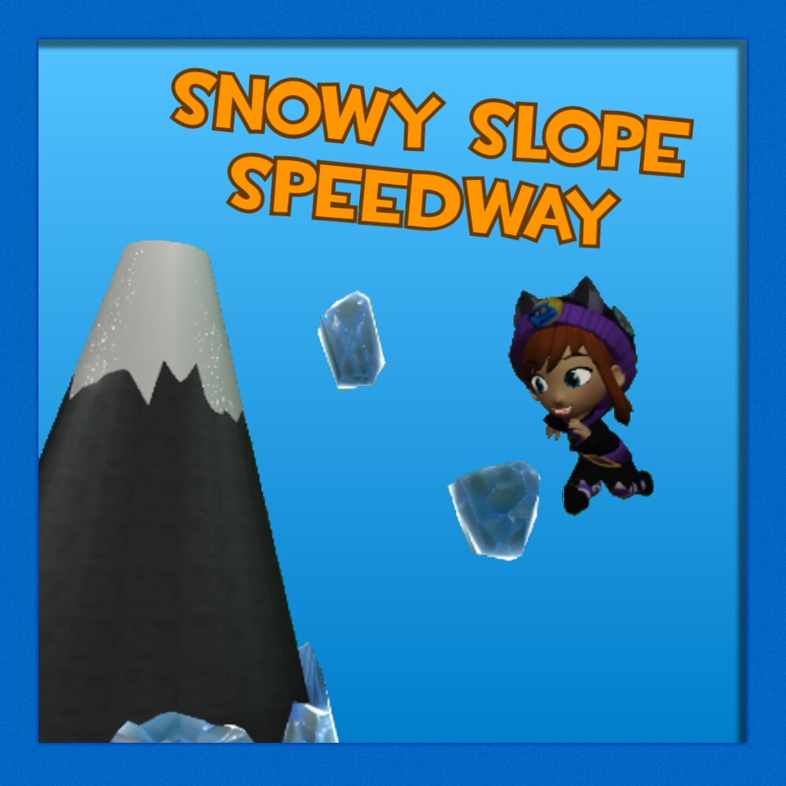
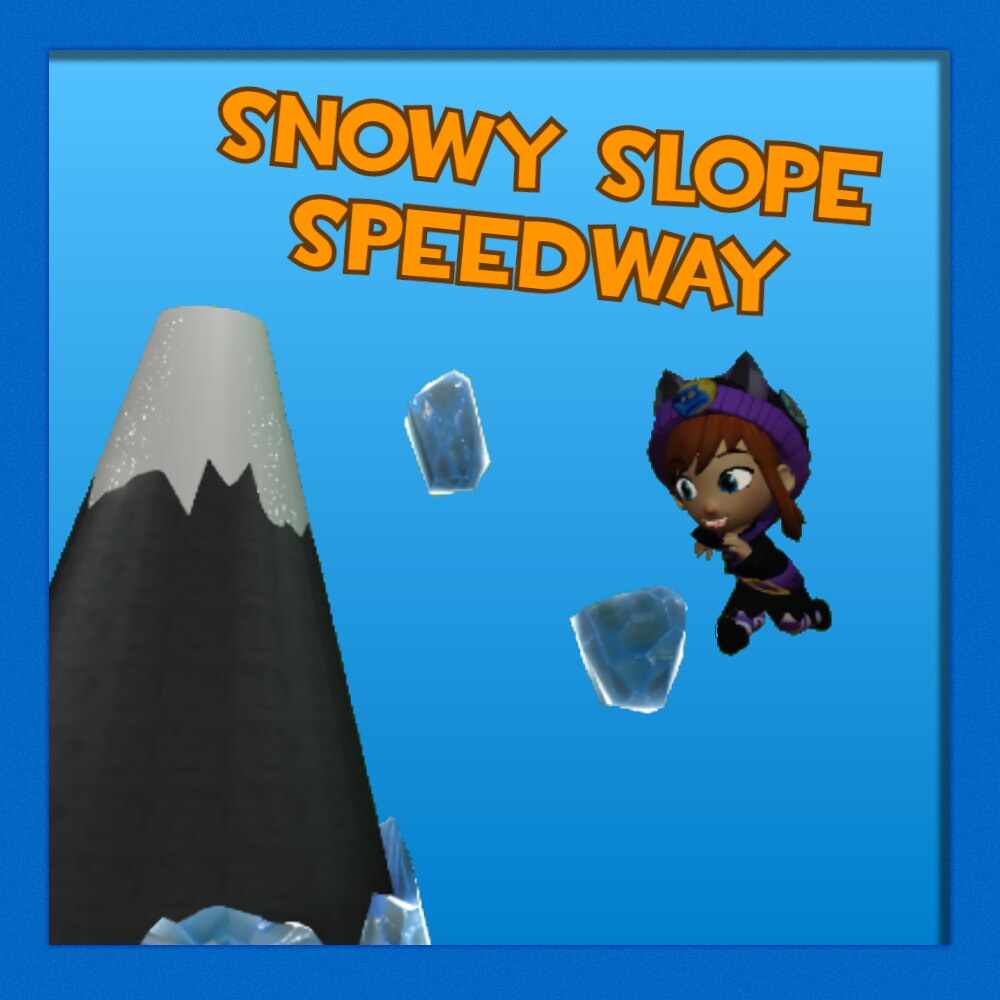

This is a list of major mods for A Hat in Time that were developed by me. As of writing there are three finished mods, with no plans for more mods in the future.
.
Alpine Memories:
Welcome to the alps! This easy purple rift focuses on the pushy crow, and their mind and memories. I tried to follow the same sort of setup that the original Mafia purple rift had, and just ran with it. This level was made for the Memory modding jam of Septermber 2020!Click here!
.
Snowy Slope Speedway:
Hey, I actually made a serious level for once! This level centers on the ice hat's tech, allowing it to reach high speed down slopes. The level was built and themed as such.Click here!
.
Funny Rift:
First attempt at anything in Hat in Time modding wise. After a ridiculous eleven months in development, hell has finally arrived.Click here!
 
